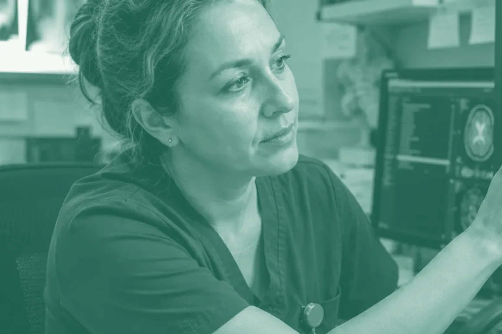

Stage 04 · Can I work there? · Medical Board of Australia and RANZCR
Registering as a radiologist in Australia
For consultant radiologists who trained outside Australia and New Zealand. The college assesses you, the Medical Board registers you, and Medicare decides where you can bill. They are three separate steps, and knowing which route is yours before you start saves months. The checklist is built into the page, so nothing you tick goes out of date.
 Kettle on. A longer read — about 16 min
Kettle on. A longer read — about 16 min
Download the PDF guide13 pages · 1.5 MB

At a glance
RANZCR assesses how comparable your training is to an Australian radiologist’s. The Medical Board makes the registration decision on that advice.
A RANZCR comparability assessment, then a period of supervised practice in Australia, then full specialist registration.
Since 1 July 2026 the Canadian Royal College specialist certificate in diagnostic radiology is on the Board’s Expedited Specialist pathway. It is the only radiology qualification on that list at present.
Section 19AB decides where an overseas trained doctor can bill Medicare for ten years. Check the role’s location before you accept it.
What’s inside
If you remember one thing, make it Section 01: which route is yours. Everything else follows from it. The checklist at the end remembers what you have ticked, on this device.
Section 01 · The one that matters most
Which route is yours
There are three ways in for a radiologist who trained overseas. Which one applies depends on where you trained and what you already hold, not on the job you are offered.
The specialist pathway
RANZCR assesses your training and experience and finds you substantially comparable, partially comparable or not comparable. You then practise under supervision in Australia before the Board grants full specialist registration. This is the route for radiologists trained in the UK, Ireland, South Africa and most other countries.
The Expedited Specialist pathway
If you hold the Royal College of Physicians and Surgeons of Canada specialist certificate in diagnostic radiology, for training that began on or after 1 July 2002, you can apply to the Board directly, without a college comparability assessment. Section 04 explains how it works.
You hold FRANZCR
RANZCR is a joint college for Australia and New Zealand. If you are already a Fellow, you hold the Australian specialist qualification and apply to the Board for specialist registration in the usual way.
If an employer offers you a post the College accepts as an area of need, RANZCR can assess you for that position and for comparability at the same time. That assessment includes an interview, clinical case scenarios and film reading. It is a way into a specific role, not a different end point: the aim is still full specialist registration.
Section 02
The RANZCR assessment
The College’s job is to judge how your training and experience compare with those of a radiologist trained in Australia. It does this from your paperwork first, then in an interview.
- 1
Verify your qualifications at source
Your primary medical degree and your specialist qualification are verified directly with the institutions that awarded them. This is done through the Educational Commission for Foreign Medical Graduates (ECFMG), using its MyIntealth service. Start early: it depends on universities and colleges replying.
- 2
Open an Australian Medical Council portfolio
The AMC portfolio holds your verified documents and links your application across the Board and the College.
- 3
Apply to RANZCR
You send the College its specialist recognition application form with your supporting documents. Once the application is complete, the College invoices you for the assessment.
- 4
The interview
Two Fellows of the College, both trained assessors, interview you online. It is a structured conversation about your training, your experience and the work you do now.
- 5
The outcome
The College decides how comparable you are and tells the Board. That finding decides what you need to do in Australia before full specialist registration.
Section 03
The three outcomes
Your outcome is what shapes the first year or two in Australia. The College sets the requirements; these are the outlines it publishes.
The most direct route
Up to 12 months of peer review in a RANZCR-accredited training site, practising as a consultant with oversight. When the College confirms you have met its requirements, you apply for full specialist registration.
Upskilling, then exams
Up to 24 months of upskilling before you sit the College’s Part or Phase 2 examinations. It is a longer road, and worth planning around: the role you take needs to support it.
Another route
The College refers you back to the Medical Board, which can tell you about other options for medical registration. The specialist pathway is not the route on the evidence provided.
Wait for your outcome. A partially comparable finding changes your timeline, your role and sometimes your pay, and it is much easier to plan around before you have committed to a date.
Section 04
The Expedited Specialist pathway
The Medical Board opened this pathway in October 2024 for specialists whose qualifications it has already judged substantially equivalent to Australia’s. Diagnostic radiology joined it on 1 July 2026.
The qualification on the list for radiology is the Royal College of Physicians and Surgeons of Canada specialist certificate in diagnostic radiology, for an accredited Canadian residency that began on or after 1 July 2002. At present it is the only radiology qualification on the list. If you trained in the UK, Ireland or elsewhere, the RANZCR specialist pathway in Sections 02 and 03 is your route.
On the expedited pathway you apply to the Board directly, without a college comparability assessment. You are then supervised for six months by an Australian-registered specialist, complete an orientation to the Australian health system and do the Board’s mandatory cultural safety education. Because the supervision happens in a job, you need a role lined up.
Everything else is the same as for any other doctor: the English language, criminal history and recency of practice standards all apply.
The Board adds specialties and qualifications as the Australian Medical Council assesses them. If yours is not on the list today, check again before you apply.
Section 05
Your registration along the way
On the specialist pathway you do not start on full specialist registration. You hold an interim registration while you complete what the College asks of you.
- 1
Secure a suitable position
If you are substantially or partially comparable, you need a role, and the Board approves both the position and the supervision arrangements for it.
- 2
Provisional or limited registration
The Board grants provisional or limited registration for your period of supervised practice. The Board describes this as lasting between three and 24 months, depending on what the College requires.
- 3
Full specialist registration
When the College confirms you have met its requirements, you apply to the Board for specialist registration in diagnostic radiology.
Section 06
English language
Every doctor registering in Australia has to meet Ahpra’s English language skills standard, and the expedited pathway is no exception.
There are two broad ways to meet it. If you completed your education in English in one of the countries Ahpra recognises, you may not need to sit a test; that list was widened in 2025, so check it even if you were told otherwise before. South Africa was removed from it at the same time, so if you trained there, check the transition arrangements before you assume you are exempt. Otherwise you sit one of the accepted tests and reach the scores the standard sets.
We do not print the scores here because Ahpra revises them. Read the current standard before you book a test, and time the test so your result is still valid when you apply.
Section 07
Your supporting documents
A clean, complete pack is the biggest thing within your control on timing. Certified copies, clear high-resolution scans, consistent names and every page included.
- Passport and proof of identity
- Certified, with evidence of any change of name.
- Primary medical degree
- Verified at source through the ECFMG, with your transcript.
- Specialist qualification
- Your radiology fellowship or certificate and, where your country issues one, your certificate of completion of training. Also verified at source.
- Training record
- Your specialist training programme, rotations and assessments, in enough detail for the College to compare it.
- Experience since training
- A structured CV showing your consultant posts, modalities, subspecialty work and reporting volumes, with no unexplained gaps.
- Registration history
- Every medical regulator you have been registered with, and a current certificate of good standing from each.
- English language evidence
- If the standard requires it.
- Translations
- Certified, supplied together with the original document.
Ahpra checks your criminal history, including in the countries you have lived in, and tells you how to provide what it needs. You also need professional indemnity insurance in place before you practise; your employer will tell you what their cover includes.
Section 08
Medicare, and where you can work
Registration lets you practise. Whether you can bill Medicare, and where, is a separate question decided by section 19AB of the Health Insurance Act.
Section 19AB applies to every doctor who qualified overseas. For ten years from your first medical registration in Australia, you can generally only access Medicare benefits in areas classed as having a shortage. For specialists other than GPs, those areas are called Districts of Workforce Shortage, and each specialty has its own map. Diagnostic radiology is assessed separately from other specialties, so a town that is a shortage area for one specialty may not be for radiology. The ten years can be shortened by working in more remote areas, and work in a public hospital that does not bill Medicare is not restricted.
This matters most in private practice, where your reports are billed to Medicare. Before you accept a role, ask the employer to confirm the location’s status for diagnostic radiology, or search the Health Workforce Locator by specialty yourself. Once you are registered, you apply to Services Australia for a Medicare provider number.
One more licence to know about: each state and territory regulates the use of radiation separately, and doctors who operate radiation equipment, for example in fluoroscopy or interventional work, generally need a licence under the local rules. Your employer will usually tell you what applies where you are going.
Section 09
The visa
Most radiologists we support move on an employer-sponsored visa, the 482. Your employer sponsors the role; the Board registers you. Both have to happen, and they run side by side.
The Department of Home Affairs sets the visa rules and publishes them in full. Visa agents can be expensive and are not always necessary; many people apply themselves with their employer’s help. If your situation is complicated, a registered migration agent can advise you, and Home Affairs explains how to check that an agent is registered.
Before you apply
Five things, in this order
Work out which route is yours. Start verifying your qualifications, because it takes the longest. Check the English standard. Find a role whose location and supervision fit your route, and check its Medicare status for radiology. Then apply to the College, or to the Board on the expedited pathway.
Where people get stuck
Almost every avoidable delay traces back to one of these
Starting verification late
Primary source verification depends on universities and colleges replying. It is usually the slowest part, so start it first.
Assuming the expedited pathway applies
For radiology it currently covers the Canadian certificate only. UK and Irish qualifications go through RANZCR.
A CV the College cannot compare
Missing modalities, subspecialty work or reporting volumes, so the assessors cannot see the full picture of your practice.
Accepting a role before checking Medicare
A role in a location that is not a shortage area for radiology can limit what you can bill.
Committing before the outcome
Resigning or setting a moving date before you know whether you are substantially or partially comparable.
The wrong English test, or too early
Check the current standard before booking, and time the test so the result is still valid.
The fix for all of these
Know your route, start verification early, describe your practice fully, and check the role’s location and supervision before you say yes.
Section 11
The questions we are asked most
I trained in the UK. Can I use the expedited pathway?
Not at present. For diagnostic radiology, the only qualification on the Board’s expedited list is the Canadian Royal College specialist certificate. UK-trained radiologists go through the RANZCR specialist pathway. The Board adds qualifications over time, so it is worth checking the list again before you apply.
Who decides whether I am comparable?
RANZCR assesses you and advises the Medical Board, which makes the registration decision.
Can I work while I complete supervised practice?
Yes. Supervised practice happens in a real role, on provisional or limited registration, with supervision the Board has approved. That is why the role and the registration need to be lined up together.
What does partially comparable mean for me?
The College asks for up to 24 months of upskilling before you sit its Part or Phase 2 examinations. Your outcome letter sets out exactly what applies to you.
Does section 19AB stop me working in a city?
It limits where you can bill Medicare, not where you can be registered. Whether a particular location is a shortage area for diagnostic radiology depends on the specialty’s own map, so check the role’s location before you accept it.
Do I need a visa agent?
Not always. Visa agents can be expensive and are not always necessary. Home Affairs publishes the rules for the 482 in full, and your employer will help with their side of it.
Section 12
The whole journey on one page
From first decision to first report. Each stage links to the section that explains it; the checklist tracks the same stages.
- Before you start
Work out your route
Specialist pathway, expedited pathway, or already a Fellow. Section 01
- Preparing
Verify your qualifications
ECFMG verification and your AMC portfolio. Start these first. Section 02
- Preparing
English, if the standard requires it
Read the current standard, then time any test. Section 06
- Applying
Apply to RANZCR, or to the Board
The College for the specialist pathway; the Board for the expedited pathway. Section 02, Section 04
- Assessment
Interview and outcome
Substantially, partially or not comparable. Section 03
- Lining up
The role, supervision and Medicare
A position the Board approves, in a location that works for Medicare. Section 05, Section 08
- Moving
Registration granted, visa approved
Provisional or limited registration, and the 482. Section 09
- In Australia
Supervised practice, then specialist registration
Peer review or upskilling, then full specialist registration.
The checklist
Twenty-four items, in the order you will meet them
Tick as you go. Ticks are saved on this device only — nothing is sent to us — and the list is always the current version, which a downloaded copy never is.
01Work out your route
Everything else depends on this.
02Verify your qualifications
Usually the slowest step. Start it first.
03Gather your documents
Certified, complete and consistently named.
04English
Read the standard before you book anything.
05Apply and be assessed
The College, or the Board on the expedited pathway.
06Line up the role
Registration, supervision and Medicare need to fit together.
07Registration and the move
The last steps before your first report.
What next?
Registration is one part of the decision
How we help
We line up the role and the registration so they move together
Where we have a radiology vacancy that fits, we help you secure the role and the supervision your route needs, and we guide the timing of your applications so one does not hold up the other. The registration decision always rests with the Medical Board of Australia, on the College’s advice.